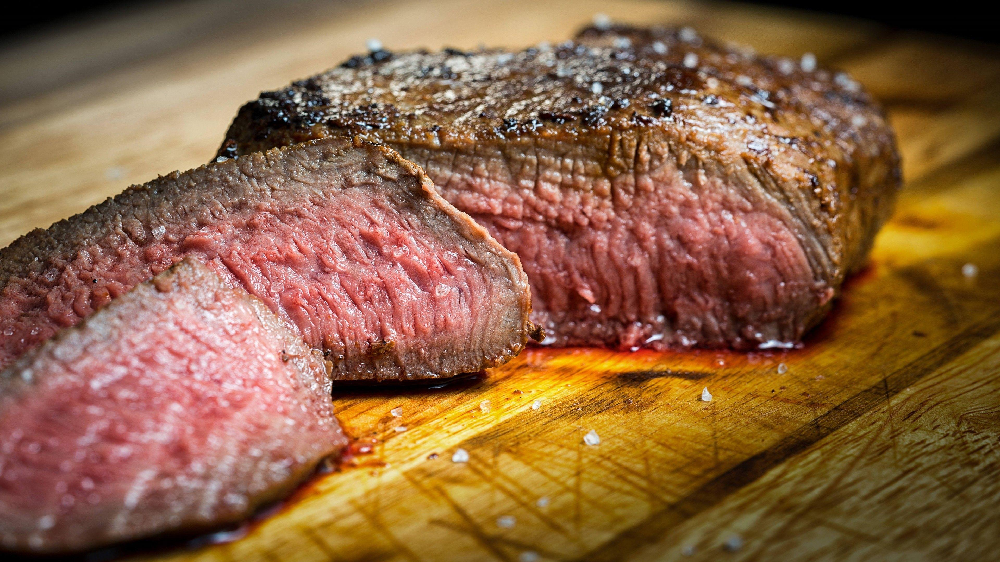

Back to home
Chop

A simple yet delicious chop
A chop is a extremely simple yet delicious meal. It's a great choice for a quick and easy dinner. It's also a great choice for a romantic dinner with your significant other.
Ingredients
-
As many raw meat chops as you want
-
Salt(optional)
-
Pepper(optional)
-
Garlic(optional)
Steps
-
Add the seasoning to the chops if you choose to
-
Heat up a gridle or a pan
-
Put the chops on the gridle or pan
-
Cook the chops for 5 minutes on each side
-
Serve the chops, and enjoy!